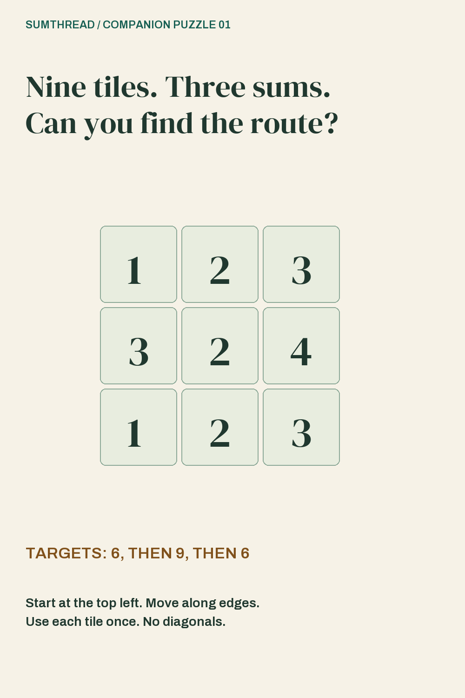
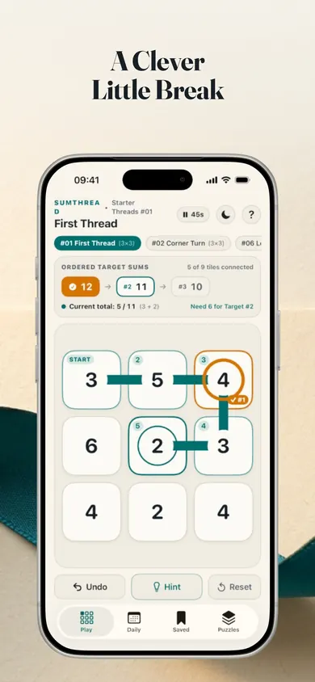

Reach the first exact sum.
You begin with 1. When your segment reaches 6, that tile becomes a checkpoint. The next tile starts the next segment; you do not count the checkpoint value twice.
Thread 01 · Published 4 November 2026
A small number-path puzzle for a thoughtful break. Start at the top-left tile, visit every tile once, and reach 6, then 9, then 6.
No countdown. Undo as often as you like.
Published puzzle · permanent archive
Tap tiles one at a time. Move up, down, left or right—never diagonally. Each exact target starts a new sum from zero. Finish the final target on the ninth tile.
Tiles in your current path
6 → 9 → 6
Segment sum: 0 / 6
Start at the top-left 1. Build the first target of 6.
No tiles selected yet.
An original publisher-created companion puzzle. This fixed 3×3 board is not Sumthread's Daily Thread, which the app listing describes as a fresh 4×4 board generated each day. Progress here resets when the page reloads.
Print this 3×4 number-path puzzle. Start at A1 and draw one line through all twelve tiles. Your four targets, in order, are 14, 10, 12 and 7.
Open The Switchback PDF Two US Letter pages. Print page 1 for the puzzle and page 2 for the answer.
Start at A1, including its value of 5. Move up, down, left or right. Visit each tile once. When your sum reaches a target exactly, reset it to zero and start the next sum on the next tile. Reach the last target on the twelfth tile.
| Row | A | B | C | D |
|---|---|---|---|---|
| 1 | 5 | 2 | 3 | 2 |
| 2 | 5 | 3 | 4 | 4 |
| 3 | 4 | 3 | 4 | 4 |
Follow these four segments in order. After each checkpoint, begin the next sum on the next tile.
Newsletters, puzzle clubs and classrooms may reprint this original puzzle for free with the Honest Little Apps credit. The answer may be published separately.

You begin with 1. When your segment reaches 6, that tile becomes a checkpoint. The next tile starts the next segment; you do not count the checkpoint value twice.
A tempting sum is not enough if it cuts off unused tiles. Look at the remaining neighbours before committing to your next step.
All three targets and all nine tiles belong to the same route. If you want to rethink a section, use Undo or tap an earlier selected tile to backtrack.
Try moving across the top row first. Its values are 1, 2 and 3, which complete the first target of 6.
Follow a snake across the rows: top row left to right, middle row right to left, bottom row left to right.
The route visits all nine tiles exactly once using only side-adjacent moves. Each checkpoint ends one segment; the following tile begins the next.

Keep a thread ready for your next break
Sumthread's listing describes five puzzle collections, from 3×3 Starter Threads to 4×5 Grand Tapestry boards, plus a daily 4×4 puzzle.
The app adds tap or drag controls, backtracking, next-step cues and automatic local saving. It also offers a Clean Weave seal for completing a board without hints or undos. You do not need to chase that seal to enjoy solving.
Open Sumthread in the App StoreListed as free · iPhone and iPad · iOS/iPadOS 18 or later
The listing describes offline play, no account and no ads.
This is a fit if you enjoy a small grid, exact sums and retracing a route. If you want a fast action game or a puzzle without arithmetic, choose a different kind of game.
You can replay this fixed board whenever you like. For changing daily boards and saved progress, see the app's current listing.